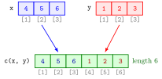

Atomic Vector¶
Definition¶
An atomic vector is an ordered sequence of values that all have the same data type: all doubles, all integers, all logical values or all character strings. Its elements sit at positions , and is its length, returned by length(). A vector of length 1 is called a scalar; R has no separate type for single values.
The usual way to create a vector is the combine function c(), which joins its arguments, separated by commas, into one vector. The arguments may themselves be vectors; the result is always one flat vector. vector(mode, length) creates a vector of a given type and length filled with a default value: zeros for "numeric", empty strings "" for "character", and FALSE for "logical".
In this course "vector" means atomic vector, as opposed to a list.
Interpretation¶
A vector is a row of numbered boxes holding values of one kind. Almost everything in R is built from vectors: a single number is a vector of length 1, a matrix is a vector arranged in rows and columns, and each column of a data frame is a vector.

The figure is Example 2. Each cell holds one value and the label under it is its position. c(x, y) copies the three values of x (blue) followed by the three values of y (red) into a new vector of length 6 (green); the order of the arguments is the order of the result, and x and y themselves are unchanged. The positions are what subsetting by position uses.
An R vector of numbers corresponds to a vector in from linear algebra: an ordered list of numbers, and the arithmetic of the next pages (vectorized operations) matches vector addition and scalar multiplication. Two differences: an R vector has no row or column orientation, and it may also hold text or logical values.
The one-type rule has a price. When c() receives values of different types it does not refuse: it silently converts them all to one type (type coercion), so c(1, 2, "3") is a character vector. Likewise, c() cannot nest: combining vectors only makes a longer vector, and keeping pieces separate needs a list.
Key Results¶
- All elements of an atomic vector have the same type; mixing types in
c()converts them to one common type. c()concatenates values and vectors in the order given and always returns a flat vector.length(x)is the number of elements; a single value is a vector of length 1.vector("numeric", n)gives zeros,vector("character", n)gives empty strings andvector("logical", n)gives valuesFALSE.- Positions start at 1, not at 0.
Examples¶
1. Creating vectors with c().
int_vec <- c(5L, 10L, 15L)
int_vec
#> [1] 5 10 15
char_vec <- c('A', 'B', 'C')
char_vec
#> [1] "A" "B" "C"
length(int_vec)
#> [1] 3
length(5)
#> [1] 1
The last line shows that the single number 5 is a vector of length 1.
2. Combining vectors.
3. Vectors of a given length.
a <- vector(mode = 'numeric', length = 10)
a
#> [1] 0 0 0 0 0 0 0 0 0 0
b <- vector(mode = 'character', length = 3)
b
#> [1] "" "" ""
Creating a vector of the right length first and filling it in afterwards is the standard pattern for storing results computed in a for loop.
4. Pitfalls: mixed types and no nesting.
c(1, 2, "3")
#> [1] "1" "2" "3"
c(1, TRUE, FALSE)
#> [1] 1 1 0
length(c(c(1, 2), c(3, 4, 5)))
#> [1] 5
One character value turns all numbers into text, and logical values become 1 and 0 next to numbers. The two inner vectors are not kept as two pieces: the result is a single vector of length 5.
Prerequisites¶
Related Concepts¶
- Vectorized Operations
- Vector Recycling
- Type Coercion
- Subsetting by Position
- Matrices in R
- List
- Sequences with : and seq()
- Vector
Sources¶
- Programming for EOR · Week 1
- Lecture script Data Types and Structures (Part 2), section "Data Structures in R", part "Scalars & Vectors"
Aliases: vector in R, c(), combine function, vector(), length(), scalar in R Keywords: one type per vector, combining with c, vector length, scalar as length one Symbols: real numbers
Last updated: 10 November 2026 16:43
Atomic VectorComparison OperatorsData Framefor LoopMatrices in RListRandom Sampling with sample()Repeating Values with rep()Sequences with : and seq()Subsetting by PositionSummary Statistics in RType CoercionVector RecyclingVectorized OperationsAtomic Data TypesFunction CallVector